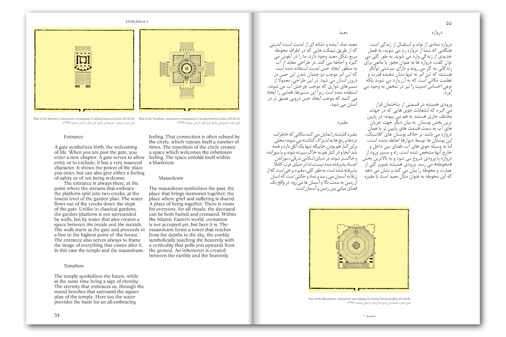
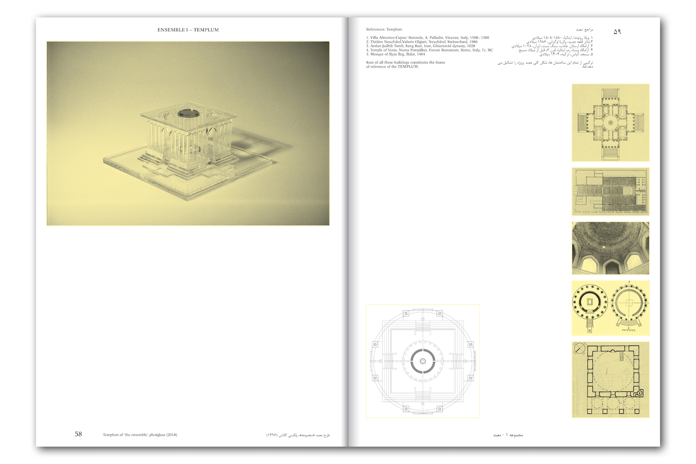
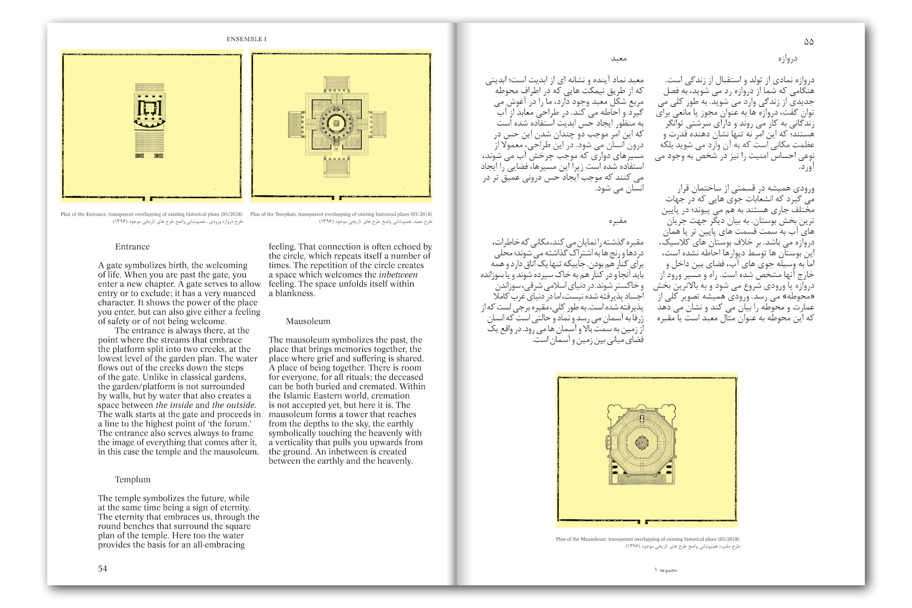
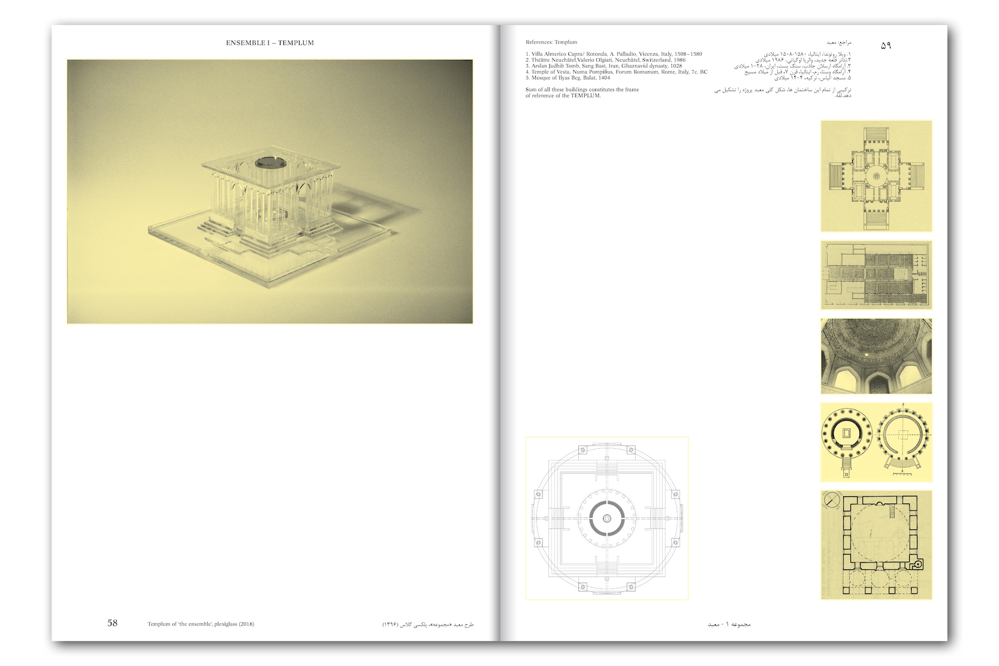
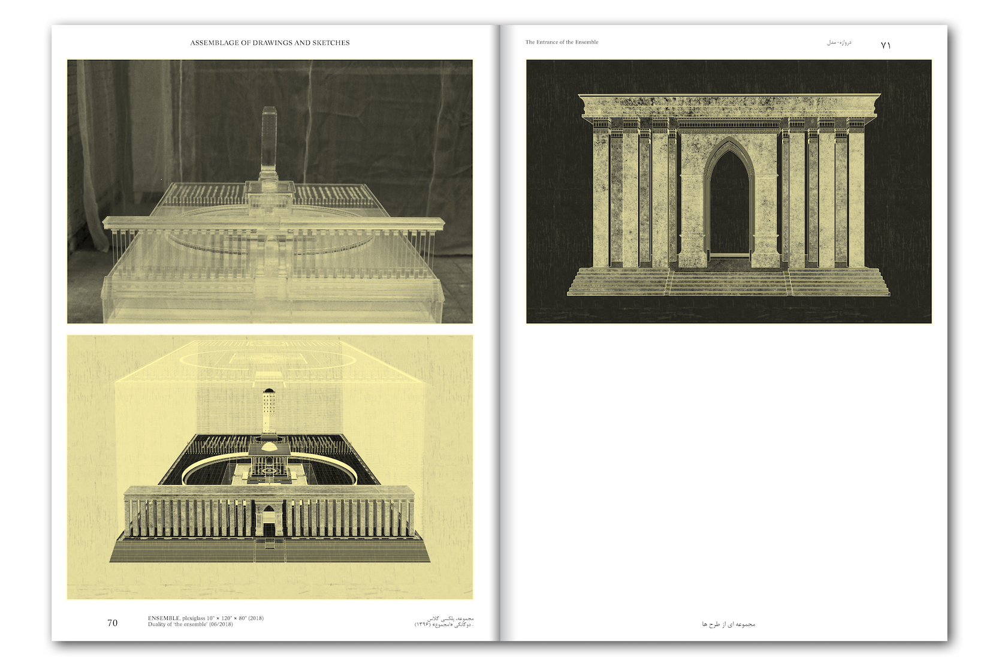
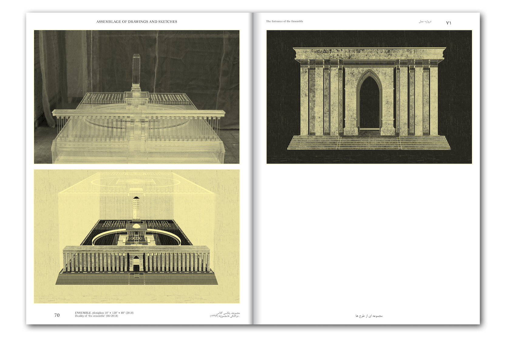
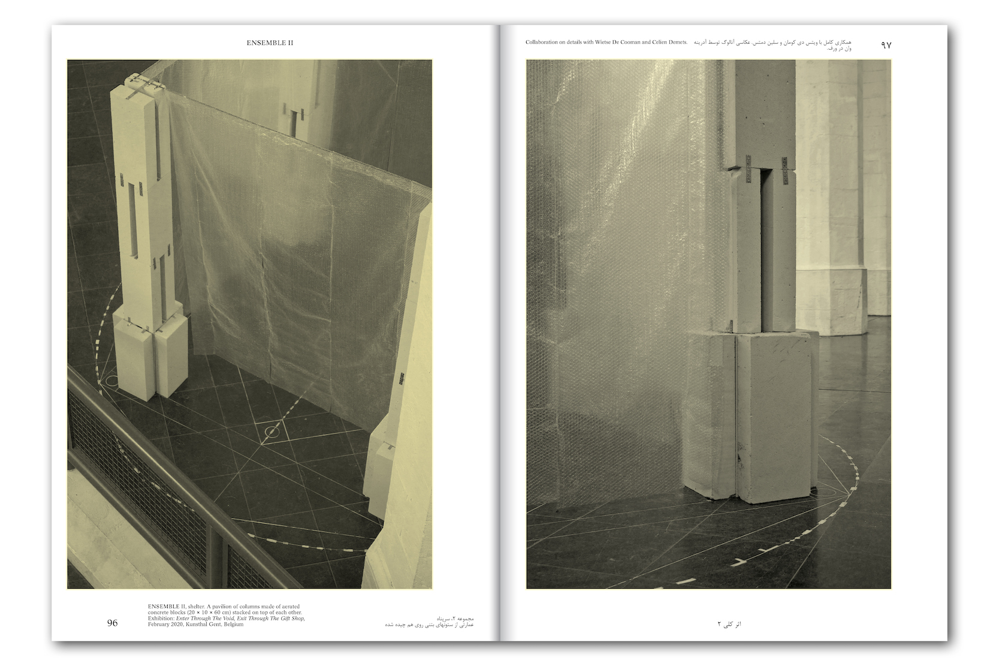
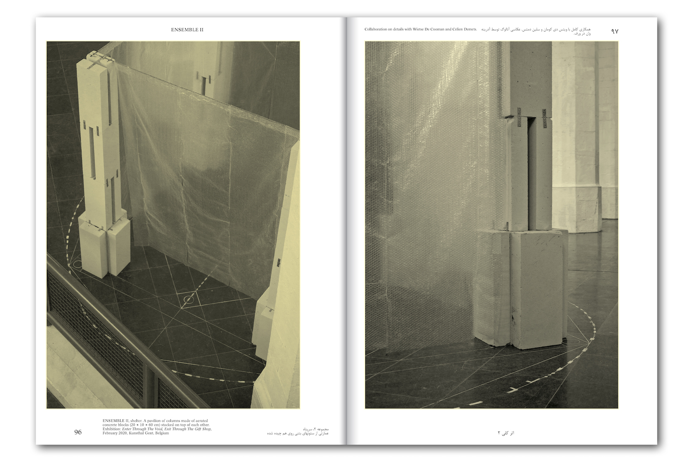

Shervin/e Sheikh Rezaei’s “Inhale Me” is part of a new series of works (that premiered at CC Strombeek) in which she questions the power and meaning of words, symbols, and contemporary power structures. The words are forceful, almost commanding, yet simultaneously demand submission. Phrases like ‘use me’ or ‘fear me’ could just as easily come from the mouths of lovers as from recent newspaper headlines. By taking these elements out of context and relocating them to the public space, an intimate message suddenly becomes highly political. While the original works reflect on power structures and the relationship between submission and authority on an interpersonal level, here our relationship with the city comes into focus. Is this a love letter to the city or a statement of ecological activism? Sheikh Rezaei leaves that question unanswered—and it is precisely in that openness that the strength of her work.
This edition is published in the context of artlead‚Äôs PLAKT series. We saved 15 pristine copies of this print to present as a limited edition ‚Äì signed and numbered by the artist. Buy a copy to help us keep this project running ü§ç
Shervin/e Sheikh Rezaei
Inhale Me, 2025
Offset print on 115gr Blueback paper
59,4 x 84,1 cm
Edition of 15 signed & numbered copies
€265
Virago, 2022
430 x 600 mm
3 layered silkscreen on cotton Gmund paper 240gr.
edition of 34 prints
€240 (vat/btw incl.) / for students: €180
Met dank aan de Vlaamse Overheid 
Artist book: I HAVE BEEN LIVING ALL MY LIFE DREAMING …
2023, January
38 pages
Black and white
Steilheid recycled n°2
Graphic design by Septian Priyatna
Pictures by Lars Duchateau
Text written by Shervin/e Sheikh Rezaei, Els Roelandt and Weronika Zalewska
€20
Artist book: ART MEDIATION PROCESS
2021, August
15 pages
Edition of 48 pieces
Collagework inside
Scans inside
Text written by Inge Braeckman
Graphic design by Shervin/e Sheikh Rezaei
€25
ENSEMBLE: drawing analyse
209 x 405 mm
silkscreenprint
edition of 25 prints
€50/print

 
 
 


ENSEMBLE: An Architecture of the Inbetween
2020, Art Paper Editions
Limited edition / (200 ed.)
book + small (36x58cm) silkscreen-print: €45
(27 ed.)
book + big (60,2x84cm) silkscreen-print: €70
24 x 33 cm, 136 p., ills b&w, paperback, English / Farsi
December 2020
Editing and design: 6’56”